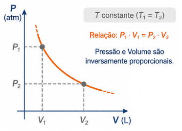
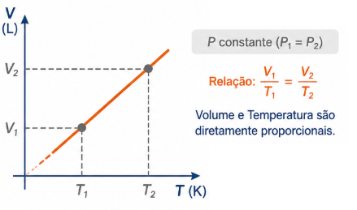
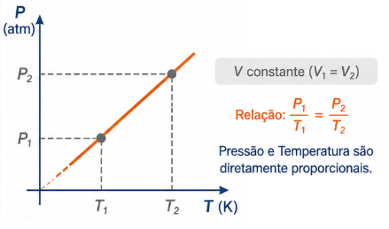

Lembre-se: A temperatura $T$ deve estar sempre em Kelvin (K).
2. Transformação Isotérmica (Lei de Boyle-Mariotte)
Ocorre quando a temperatura permanece constante ($T_1 = T_2$).
Relação: $P_1 \cdot V_1 = P_2 \cdot V_2$
Neste caso, Pressão e Volume são inversamente proporcionais. O gráfico é uma curva chamada isoterma.

Figura 1: Transformação Isotérmica.
3. Transformação Isobárica (Lei de Charles e Gay-Lussac)
Ocorre quando a pressão permanece constante ($P_1 = P_2$).
Relação: $\frac{V_1}{T_1} = \frac{V_2}{T_2}$
Volume e Temperatura são diretamente proporcionais.

Figura 1: Transformação Isobárica.
4. Transformação Isocórica/Isométrica (Lei de Charles)
Ocorre quando o volume permanece constante ($V_1 = V_2$).
Relação: $\frac{P_1}{T_1} = \frac{P_2}{T_2}$
Pressão e Temperatura são diretamente proporcionais.

Figura 1: Transformação Isocórica.
💡 Física em Ação
🛞 Pneus e Viagens
Ao viajar, o atrito do pneu com a estrada gera calor. Como o volume do pneu é praticamente constante (Isocórica), o aumento da temperatura provoca um aumento na pressão interna. Por isso, recomenda-se calibrar os pneus ainda "frios".
🫧 Mergulho e Pressão
De acordo com a Lei de Boyle (Isotérmica), à medida que um mergulhador sobe e a pressão diminui, o volume de ar nos pulmões tende a expandir. Se ele prender a respiração durante a subida, essa expansão pode causar lesões graves.
✅ Questões Resolvidas (R 1 a 5)
R 1: Transformação Isotérmica
Enunciado: Um gás ocupa 10 L sob pressão de 2 atm. Se for comprimido isotermicamente até ocupar 4 L, qual será a nova pressão?
Resolução: Como a temperatura é constante ($T_1 = T_2$):
$P_1 \cdot V_1 = P_2 \cdot V_2 \implies 2 \cdot 10 = P_2 \cdot 4$
$20 = 4P_2 \implies P_2 = \frac{20}{4} = \mathbf{5 \text{ atm}}$.
R 2: Transformação Isobárica
Enunciado: Um balão contém 3 L de gás a 27°C. Se a temperatura subir para 127°C sob pressão constante, qual o novo volume?
Resolução: Converter T para Kelvin: $T_1 = 300\text{ K}$ e $T_2 = 400\text{ K}$.
$\frac{V_1}{T_1} = \frac{V_2}{T_2} \implies \frac{3}{300} = \frac{V_2}{400}$
$300V_2 = 1200 \implies V_2 = \mathbf{4 \text{ L}}$.
R 3: Transformação Isocórica (Pneus)
Enunciado: Um pneu tem pressão de 30 psi a 27°C. Após rodar, a temperatura sobe para 57°C. Qual a nova pressão (volume constante)?
Em um recipiente fechado de volume fixo, o aumento da temperatura de um gás ideal provoca um aumento da pressão porque:
A) as moléculas diminuem de tamanho. B) as moléculas colidem com as paredes com maior velocidade. C) o número de mols do gás aumenta. D) a força de atração entre as moléculas aumenta.
Resolução: Alternativa B. O aumento da temperatura eleva a energia cinética média, resultando em colisões mais frequentes e violentas contra as paredes.
T 12: (FUVEST) Lei Geral
Certa massa de gás ideal ocupa um volume de 10 L a 27°C e 2 atm. Se o volume for reduzido para 5 L e a pressão aumentada para 5 atm, a temperatura final será: